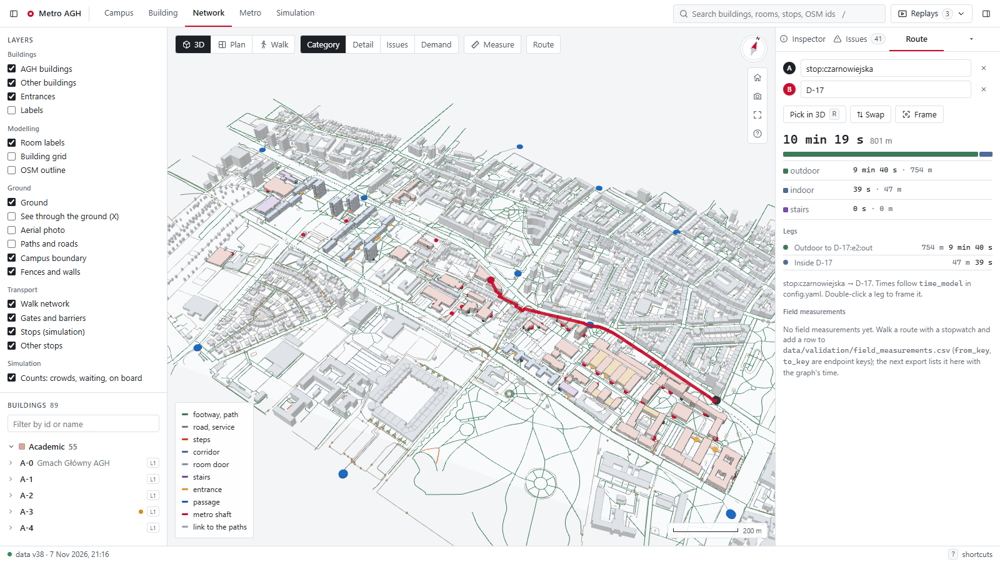
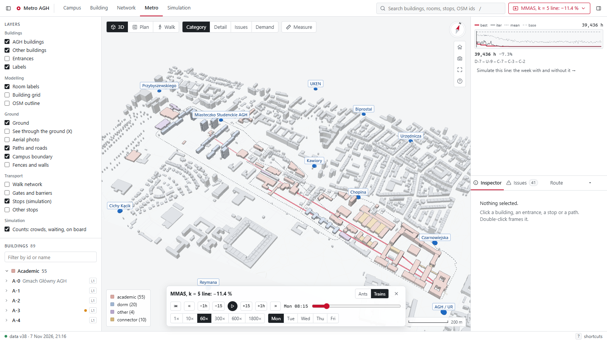
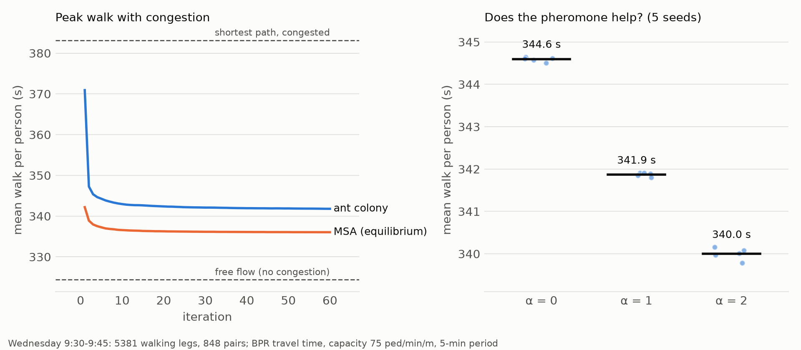
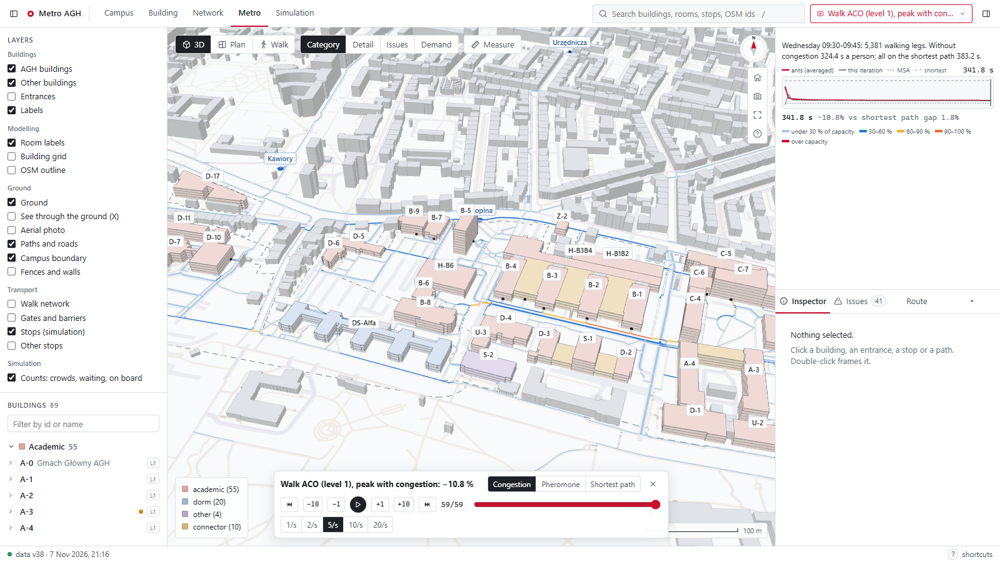

Algorytmy inspirowane naturą · etap 1
Dane, model i pierwsze algorytmy mrówkowe
Maks Słota · Mateusz Kotarba · Krzysztof Piątek · Kamil Pustelnik · Karolina Rozmus
prowadzący: Maciej Gierdziewicz
Gdzie postawić linię metra z k stacjami, żeby łączny czas przejść studentów między zajęciami był najmniejszy?
I ile stacji w ogóle ma sens?
| przejście | pieszo | metrem | wybór |
|---|---|---|---|
| D-17 → A-0 | 14 min | 6 min | metro, −8 min |
| C-2 → C-3 | 2 min | 7 min | pieszo |
Przykład z założeń projektu. Metro opłaca się przy długich przejściach.
gniazdo
pokarm
krótka
długa
Mrówki znaczą szlak feromonem w obie strony.
Z krótszej gałęzi wracają szybciej, więc feromonu przybywa tam szybciej, a kolejne mrówki częściej ją wybierają.
Żadna mrówka nie porównuje długości: wybór jest zbiorowy.
Goss, Aron, Deneubourg, Pasteels (1989), Naturwissenschaften 76: 14 z 14 kolonii wybrało krótszą gałąź (dwa razy krótszą).
22 660
studentów: suma kohort z USOS
286 169
przejść w tygodniu 16–20.11.2026
4 830
różnych par „skąd → dokąd”
55
kandydatów na stację: budynki dydaktyczne
USOS AGH: sale, plany sal, grupy zajęć z liczbą zapisanych, kohorty, daty spotkań (cykl 26/27-Z)
OpenStreetMap: obrysy budynków, wejścia, chodniki, schody, bariery (Overpass API)
GTFS ZTP Kraków: rozkład autobusów i tramwajów, 12 przystanków kampusu
campus.gpkg--bootstrap), potem ręcznie: obrys, liczba pięter (× 3,5 m, domyślnie 3), wejścia, aliasy kodów USOS
Trasa Czarnowiejska → D-17 w grafie: 801 m, 10 min 19 s
13 881
zajęć w tygodniu (plany sal)
15 395
grup zajęć
553
kohort (kierunek + semestr)
157 437
spotkań w semestrze
| liczebność grupy | skąd | grup |
|---|---|---|
| liczba zapisanych > 0 | USOSweb, strona grupy | 15 312 (99,5 %) |
| limit miejsc | USOSweb | 45 |
| 60 % miejsc najmniejszej sali | USOS API (pojemność sali) | 38 |
22 660
studentów = suma kohort. Kohorta = 75. percentyl, po jej przedmiotach, liczby zapisanych dzielonej równo między kohorty, które ten przedmiot dzielą (wykłady obowiązkowe mają wszystkich, obieralne nie)
7 000
w akademikach (31 %): Miasteczko AGH ma ok. 7 tys. miejsc dla studentów w 20 domach (Radio Kraków). Rozdzielone na 20 akademików proporcjonalnie do powierzchni pięter z modelu 3D
15 660
dojeżdża: każdy „przyjeżdża” na jeden z 12 przystanków, z prawdopodobieństwem ∝ miejsca w pojazdach przyjeżdżających 7–10 (GTFS; autobus 90, tramwaj 180)
| przystanek | Plac Inwalidów | AGH / UR | Biprostal | Czarnowiejska | UKEN | pozostałe 7 |
|---|---|---|---|---|---|---|
| przyjazdy 7–10 | 432 | 341 | 240 | 186 | 164 | 48–155 |
| studentów | 3 179 | 2 399 | 1 691 | 1 399 | 1 229 | 617–1 079 |
103 139
przejść między zajęciami
91 515 + 91 515
z domu na zajęcia i z zajęć do domu
20 674
studentów ma w tym tygodniu choć jedno przejście
| stała | wartość | skąd |
|---|---|---|
| prędkość pieszego | 1,3 m/s (4,7 km/h) | Weidmann (1993): średnia 1,34 m/s |
| schody w pionie (w górę / w dół) | 0,35 / 0,45 m/s | założenie; Fruin (1971): 0,51–0,57 / 0,67–0,77 m/s wzdłuż biegu |
| schody z OSM (bez wysokości) | × 1,5 czasu poziomego | założenie |
| drzwi / wejście do budynku | 3 s | założenie |
| autobus / tramwaj (funkcja celu) | dojście + ½ mediany odstępu + mediana przejazdu | GTFS ZTP Kraków, kursy 6–21 |
| autobus / tramwaj (symulacja) | konkretny kurs z rozkładu | GTFS, dzień roboczy (wtorek) |
| „bez metra” | min(pieszo, autobus / tramwaj) | metro musi wygrać z istniejącą komunikacją |

| stała | wartość | skąd |
|---|---|---|
| prędkość jazdy | 10 m/s = 36 km/h | studium metra w Krakowie: prędkość handlowa ok. 32–36 km/h (stm.krakow.pl) |
| postój na stacji pośredniej | 30 s | typowo 15–45 s w metrze; założenie |
| odstęp pociągów | 180 s | metro w Warszawie w szczycie: M2 co 2 min 50 s, M1 co 2 min 20 s (WTP) |
| czekanie w funkcji celu | 90 s = ½ odstępu | student przychodzi w losowej chwili |
| godziny kursowania | 7:00–21:00 | założenie: godziny zajęć |
| głębokość peronu | 15 m | założenie: płytka stacja |
| szyb | schody: 33 s / 43 s | prędkości schodów z modelu pieszego; bez windy |
| pojemność pociągu | nie modelujemy | każdy, kto chce, wsiada |
| koszt budowy | nie ma w celu | zamiast tego liczba stacji k jako parametr |
dojście do szybu
+
szyb w dół 33 s
+
czekanie 90 s
+
jazda 10 m/s, 30 s na stacji
+
szyb w górę 43 s
+
dojście
czas = min(bez metra, metro)
cel = Σ liczba przejść × czas
Bez metra: 42 521 studento-godzin tygodniowo. Żadna linia nie da więcej niż 40,6 % (wszyscy „teleportowani” z najlepszego szybu do najlepszego).
2·10⁸
linii przy 5 stacjach z 55 kandydatów; ocena jednej: 0,23 ms
POZIOM 1
Którędy idą ludzie, gdy jest tłok?
POZIOM 2
Gdzie postawić linię metra?
czas odcinka t = t₀ · (1 + 0,73 · (x / C)⁴)
x: osoby na odcinku w ciągu 5 min (oba kierunki); C = 75 os./min/m (FHWA 1998) × szerokość × 5 min; przy x = C prędkość spada z 1,3 do 0,75 m/s (FHWA)
p(u → v) ∝ τ_d(uv)^α · exp(−β · nadłożony czas / 20 s)
nadłożony czas = c(uv) + h_d(v) − h_d(u): ile ten krok dokłada do najkrótszej drogi do celu d przy obecnym tłoku; tylko kroki bliżej celu (Dial 1971)
| element | u nas |
|---|---|
| feromon | osobny dla każdego celu d |
| mrówki | 8 na parę skąd–dokąd, 848 par |
| ludzie | dzieleni równo między ścieżki mrówek |
| przepływ | średnia z iteracji, krok 1/n (MSA) |
| odkładanie | najkrótsza / jej ścieżka, ÷ 8 |
| granice τ | [0,05; 5] jak w MMAS |
| parowanie | ρ = 0,1; 60 iteracji |

| średnie przejście | s |
|---|---|
| bez tłoku | 324 |
| wszyscy najkrótszą, z tłokiem | 383 (7 odcinków ponad C) |
| mrówki (5 ziaren) | 342 (−10,8 %) |
| równowaga (MSA, odniesienie) | 336 (−12,3 %) |
| mrówki bez feromonu (α = 0) | 344,6 |
| α = 2 | 340,0 |
scripts/walk_aco.py · wykres i tabela: docs/figures/walk_aco.png / .csv · BPR, 75 os./min/m, okres 5 min
następna stacja v ∝ τ(u,v)^α · η(u,v)^β
η(u,v) = popyt(v) · 100 / (tunel(u,v) + 100 m)
Δτ = cel bez metra / cel linii (≈ 1,13)
τ ∈ [τ_max · 0,01; τ_max], τ_max = 1 / (ρ · najlepszy / bez metra)
pierwsza stacja ∝ start(v)^α · popyt(v)^β; odkłada najlepsza z iteracji, co 3. iterację najlepsza dotąd
| parametr | wartość |
|---|---|
| mrówki | 50 |
| iteracje | 200 |
| α (feromon) | 1 |
| β (heurystyka) | 1 |
| ρ (parowanie) | 0,1 |
| τ_min / τ_max | 0,01 |
| start τ | τ_max = 1/ρ |
| klasyczne ACO (TSP) | nasza modyfikacja | po co |
|---|---|---|
| trasa przez wszystkie miasta | uporządkowany wybór k z 55, stop po k | linia, nie objazd |
| start w losowym mieście | feromon start(v) + popyt dla 1. stacji | kolonia uczy się też końców linii |
| η = 1 / odległość | η = popyt(v) / (tunel + 100 m) | stacje tam, gdzie są ludzie |
| Δτ = 1 / długość trasy | Δτ = cel bez metra / cel linii | skala niezależna od jednostek |
| koszt = suma krawędzi | cel = Σ min(bez metra, metro) po 4 830 parach | wartość odcinka zależy od całej linii |
| ocena bez pamięci | cache; linia = jej odwrócenie | każda linia liczona raz |
| stała liczba iteracji | budżet różnych linii | uczciwe porównanie (etap 2) |
| (poziom 1) jeden feromon | feromon na cel, kroki Diala, MSA | rozkład ruchu, nie jedna trasa |
| praca | co tam jest | co wzięliśmy |
|---|---|---|
| Goss i in. 1989, Naturwissenschaften | mostek: kolonia wybiera krótszą gałąź; bez parowania nie przełącza się | znaczenie w obie strony → τ symetryczne; parowanie i τ_min, żeby kolonia mogła porzucić gorszą linię |
| Korzeń, Kruszyna 2023, IJERPH | zmodyfikowany Ant System ocenia 5 wariantów tunelu; „wysiłek” z długości, mieszkańców, linii | heurystyka z popytem zamiast samej odległości; długość tunelu raportowana przy linii |
| Korzeń, Kruszyna 2025, Sustainability | jedna linia tramwajowa; „zmodyfikowane vs klasyczne” ACO; pomiary w terenie | porównanie z heurystyką 1/odległość (etap 2); protokół pomiarów |
| Stützle, Hoos 2000 | MMAS: granice τ, odkłada najlepsza | cały schemat poziomu 2; granice τ też na poziomie 1 |
| D'Acierno i in. 2012, EJOR | ACO do rozkładu ruchu, średnie kolejnych iteracji | poziom 1: przepływ uśredniany 1/n |
instance.npz): czasy dojść 55 × 101 punktów (Dijkstra raz), tunele, 4 830 par: ocena linii bez Dijkstryrun.json, krzywa zbieżności, entropia feromonu, próbka mrówek co kilka iteracji (do animacji)config.yaml, kontrakty plików w docs/data_contracts.mdwalk_aco.py; dane pośrednie w repozytorium
1 Kampus 3D, budynek w inspektorze
5 Gotowa linia: szyby, tunel, pociągi
2 Trasa Czarnowiejska → D-17
6 Poranny szczyt bez metra
3 Poziom 1: tłok o 9:30, mrówki go rozkładają
7 Ten sam szczyt z metrem
4 Poziom 2: kolonia, feromon się koncentruje
8 Obie wersje obok siebie
Na żywo: kpustelnik.github.io/natural_ai/etap-1 (wizualizacja z #stage=1)
H-D8
—
A-0
—
C-4
—
D-10
—
U-9
11,4 %
mniej czasu przejść w funkcji celu
12,9 %
w symulacji tygodnia z rozkładem jazdy
≈ 15 min
na studenta tygodniowo; 31 % przejść metrem
MMAS, k = 5, ziarno 42, bez lokalnego przeszukiwania: 200 iteracji × 50 mrówek, 6 388 różnych linii (0,003 % wszystkich), 5 s. Najlepsza linia od iteracji 52.
Działa
Etap 2